Рим → Флоренция → Венеция → Милан → озеро Комо
2 человека · 13 дней · 12 ночей
17.10 — ✈️ Рим, отдых
18.10 — 🏛️ Рим обзорная в 11.00 → Римские дома
19.10 — ⛪ Ватикан в 11.30
20.10 — 🏛️ Колизей в 12.00 → 🚆 Флоренция в 16.40 - 18.17
21.10 — 🎨 Флоренция обзорная в 12.30 + площадь Микеланджело
22.10 — 🖼️ Уффици в 10.00 + сады Боболи
23.10 — 🎨 Академия в 12.30 → 🚆 Венеция / Мурано в 17.39 - 19.55
24.10 — 🛶 Венеция + Дворец дожей + гондола
25.10 — 🌈 Мурано + Бурано
26.10 — 🚆 Милан в 13.57 - 16.25
27.10 — 🌊 озеро Комо
28.10 — 🎨 Тайная вечеря + шопинг
29.10 — ☕ Милан → ✈️ домой
🇮🇹 17 ОКТЯБРЯ · РИМ
Прилёт и спокойное начало
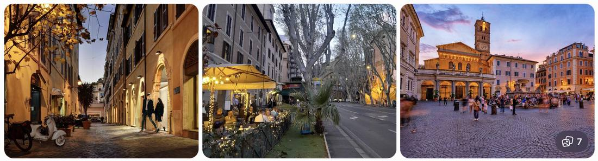
✈️ Прилёт в Рим
🏠 Рим: Квартира на Airbnb
Никаких экскурсий и обязательной программы.
- поесть
- немного погулять рядом с домом
- отдохнуть после дороги
Сегодня задача — не начать путешествие на максимальной скорости, а спокойно восстановиться после перелёта.
🇮🇹 18 ОКТЯБРЯ · РИМ
Капитолий → Треви
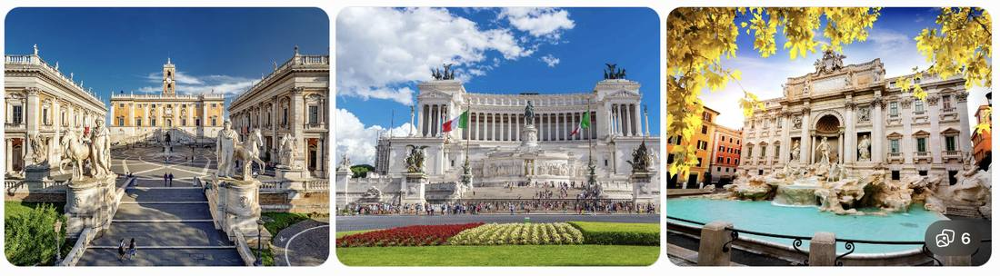
🗺️ Обзорная экскурсия по Риму в 11.00
Капитолий → исторический центр → фонтан Треви
🔗 Обзорная экскурсия — Tripster №93947
🏛️ Римские дома под Палаццо Валентини
Самостоятельно + аудиогид
🎟️ Официальный сайт — купить билеты
🚶 Вечер
Свободная прогулка и ужин.
🇮🇹 19 ОКТЯБРЯ · РИМ
Ватикан
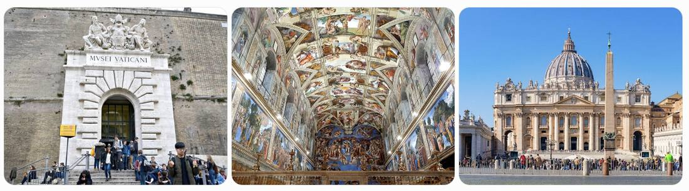
🗺️ Ватикан — с гидом в 11.30
🔗 Экскурсия по Ватикану — Tripster №88301
После экскурсии ничего обязательного не планируем.
Можно выбрать по настроению:
- замок Святого Ангела
- прогулка вдоль Тибра
- площадь Навона
- спокойный ужин
- вернуться домой и отдохнуть
🇮🇹 20 ОКТЯБРЯ · РИМ → ФЛОРЕНЦИЯ
Колизей → Флоренция
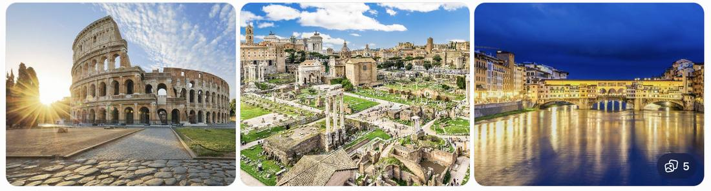
🏛️ Колизей + Римский форум + Палатин в 12.00
С гидом
🚆 Рим → Флоренция
Поезд: 16:40–18:17
Рим, вокзал Термини → Флоренция, вокзал Санта-Мария-Новелла
⏱️ около 1 ч 25–35 мин
Подойдут: Frecciarossa или Italo.
🏠 Флоренция: квартира на Airbnb
🇮🇹 21 ОКТЯБРЯ · ФЛОРЕНЦИЯ
Знакомство с городом
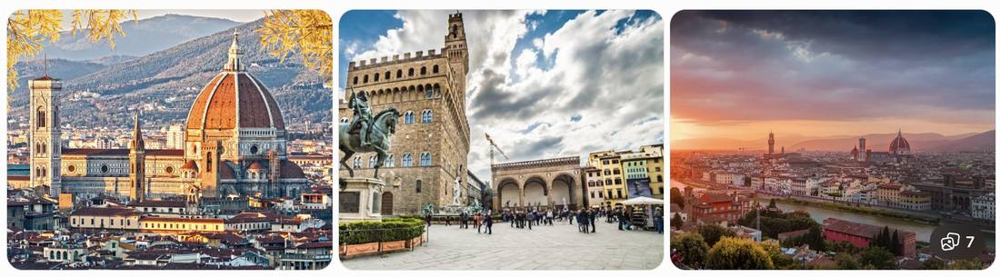
🗺️ Обзорная экскурсия по Флоренции в 12.30
🌅 Площадь Микеланджело
Самостоятельно
Прийти примерно за 45–60 минут до заката.
Просто гуляем, смотрим на Флоренцию сверху и встречаем закат.
🇮🇹 22 ОКТЯБРЯ · ФЛОРЕНЦИЯ
Галерея Уффици + сады Боболи
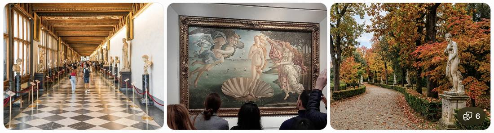
🎨 Галерея Уффици в 10.00
С гидом
🌳 Сады Боболи
Самостоятельно
Можно построить день так:
Уффици → Понте-Веккьо → дворец Питти → сады Боболи
🇮🇹 23 ОКТЯБРЯ · ФЛОРЕНЦИЯ → ВЕНЕЦИЯ
Давид → Венеция
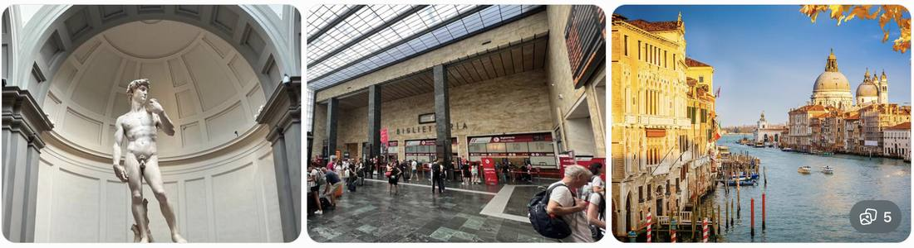
🎨 Галерея Академии в 12.30
Давид Микеланджело + аудиогид
После — забрать вещи и на вокзал.
🚆 Флоренция → Венеция
Поезд: примерно 17:39–19:55
Флоренция, Санта-Мария-Новелла → Венеция, Санта-Лючия
⏱️ около 2 часов
Подойдут: Frecciarossa или Italo.
🏠 Мурано: квартира на Airbnb
После прибытия:
Санта-Лючия → Мурано → заселение → спокойный вечер на острове.
🇮🇹 24 ОКТЯБРЯ · ВЕНЕЦИЯ
Венеция · Сан-Марко · Дворец дожей · гондола
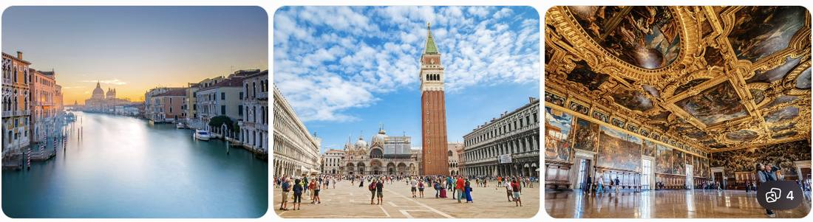
🗺️ Обзорная Венеция + Сан-Марко + Дворец дожей
С гидом
🔗 Обзорная экскурсия — Tripster №68587
🔗 Экскурсия во Дворец дожей — Tripster №62712
🛶 Прогулка на гондоле
После экскурсии, ближе к вечеру
Если получится, взять время примерно 17:00–18:00, чтобы застать красивый вечерний свет.
После — ужин и возвращение на Мурано.
🇮🇹 25 ОКТЯБРЯ · МУРАНО + БУРАНО
Острова Венецианской лагуны
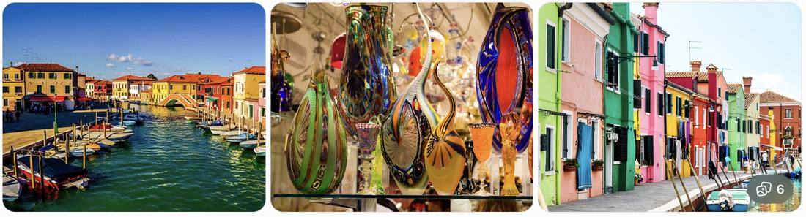
🌊 Мурано
Утро начинаем спокойно — мы уже живём здесь.
🏝️ Бурано
Ехать утром, чтобы приехать раньше основной массы туристов.
Маршрут:
Мурано → Бурано → Мурано
Без экскурсии.
📱 Навигация
- Google Maps
- официальное приложение AVM Venezia
- CheBateo — по желанию
🇮🇹 26 ОКТЯБРЯ · ВЕНЕЦИЯ → МИЛАН
Мурано → Милан
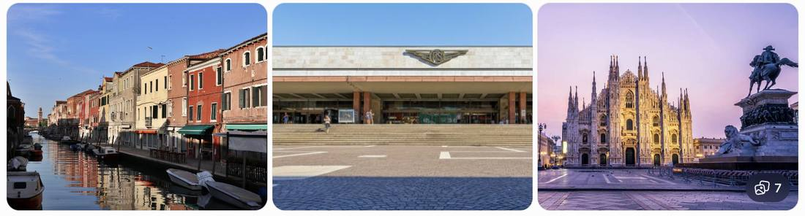
🚆 Венеция → Милан
Искать поезд: примерно 13:57–16:25
Венеция, Санта-Лючия → Милан, Центральный вокзал
⏱️ около 2–2,5 часов
Подойдут: Frecciarossa / Italo.
🏙️ Милан — лёгкий первый день
После заселения:
- Миланский собор
- Галерея Виктора Эммануила II
- Брера
- ужин / аперитив
🏠 Милан: квартира на Airbnb
🇮🇹 27 ОКТЯБРЯ · ОЗЕРО КОМО
Варенна → Белладжо → вилла Карлотта → Милан
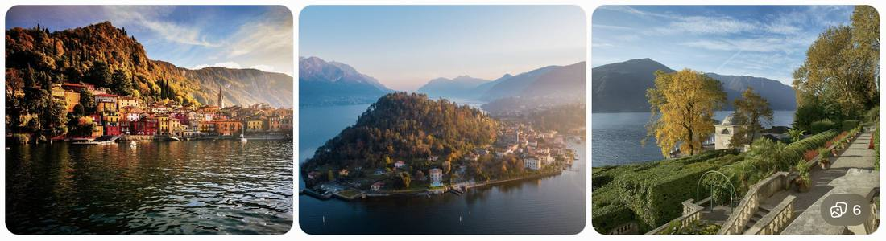
🌊 Главный день на озере Комо
🚆 Милан → Варенна
Искать поезд: примерно 09:00–09:40
Милан, Центральный вокзал → Варенна-Эзино
🌊 Варенна
Небольшая прогулка по городку.
⛴️ Варенна → Тремеццо
Лодка по озеру.
🌳 Вилла Карлотта
Главная вилла поездки.
Не устраиваем марафон из вилл — одной вполне достаточно.
27 октября 2026:
10:00–18:00
последний вход — 17:00
🌊 Белладжо
После виллы → Белладжо.
Погулять, выпить кофе, посмотреть городок и затем возвращаться в Милан.
🚤 Лодки
На наши даты действует осеннее расписание движения по озеру.
https://www.navigazionelaghi.it/en/tickets-and-timetables-lake-como/
🇮🇹 28 ОКТЯБРЯ · МИЛАН
Тайная вечеря · шопинг
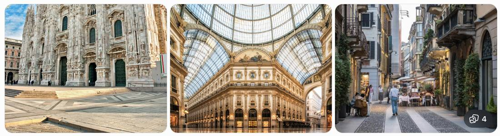
🎨 «Тайная вечеря» Леонардо да Винчи
🔗 Официальный сайт «Тайной вечери»
🏙️ Милан
После «Тайной вечери»:
- 🛍️ Шопинг
- 🍸 Аперитив
🇮🇹 29 ОКТЯБРЯ · МИЛАН
Последнее утро
✈️ Аэропорт
🍴 КРАСИВЫЕ МЕСТА ПОЕСТЬ
🇮🇹 РИМ
🥂 Rooftop Spritzeria Barberini — аперитив с видом на Рим, прямо рядом с нашим жильём. Неформально, без обязательного дорогого ужина.
🍝 Jacopa — уютная терраса в Трастевере, если захочется красивого ужина.
🇮🇹 ФЛОРЕНЦИЯ
🍕 Mister Pizza Duomo — простая пиццерия прямо у Дуомо, есть терраса с видом. Отличный вариант без пафоса.
🥂 Angel Roofbar & Dining — красивый вид на крыши Флоренции и Дуомо; можно просто на аперитив.
🇮🇹 ВЕНЕЦИЯ / МУРАНО
🌊 Rivalonga Café — прямо на Мурано, столики у воды, спритц и лёгкая еда. Очень удобно, потому что живём на острове.
🍝 Ресторан в Cannaregio — если захочется ужинать именно в Венеции, ищем уютное место у канала без туристического пафоса.
🇮🇹 МИЛАН
🥂 The View Milano — красивый вид непосредственно на Дуомо. Сначала проверить цены и меню.
🧀 В духе Mozzarella Bar — найти современное, живое и не слишком дорогое место рядом с Дуомо для нашего миланского вечера.
Когда просто надо быстро и вкусно поесть:
🍕 La Piadineria — piadina
🍕 Alice Pizza — пицца кусочками
🍝 Eataly — паста / пицца / салаты / десерты
🍴 Mercato Centrale — много разных вариантов в одном месте
🍕 Rossopomodoro — нормальный недорогой итальянский обед/ужин
💶 БЮДЖЕТ (на двоих, ориентировочно)
| Категория | € |
|---|---|
| Проживание | 1 828 |
| Перелёты | 761 |
| Поезда | 356 |
| Экскурсии | 716 |
| Еда | 1 400 |
| ИТОГО | 4 844 |